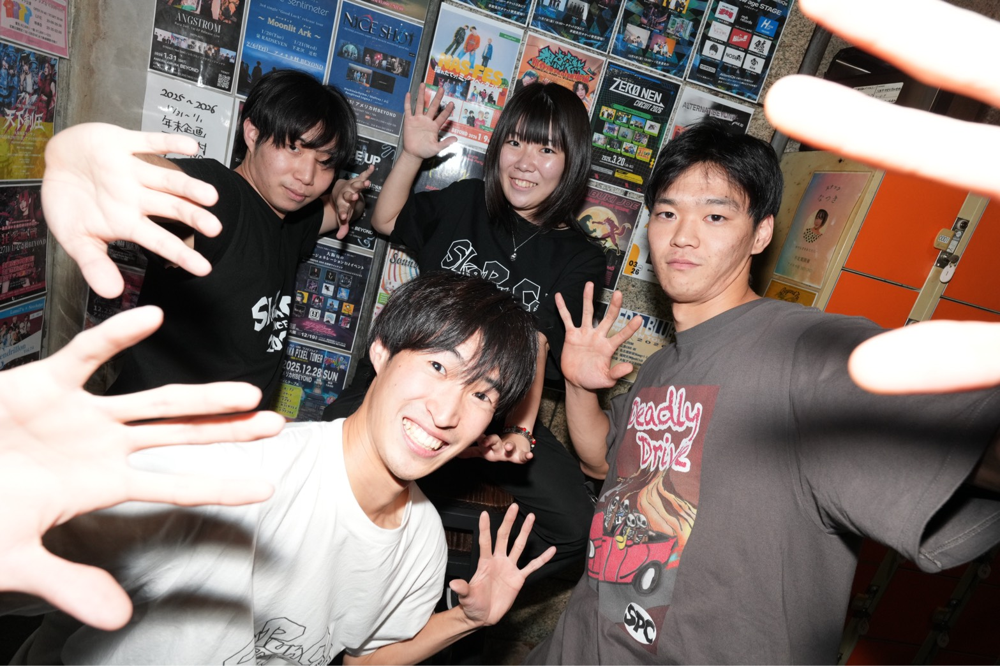
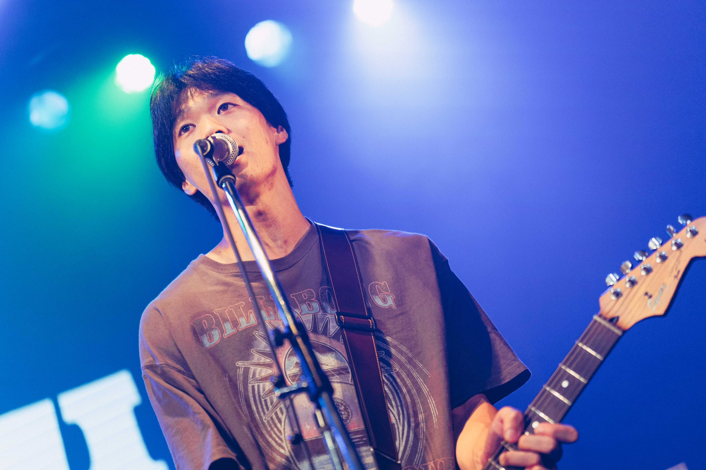
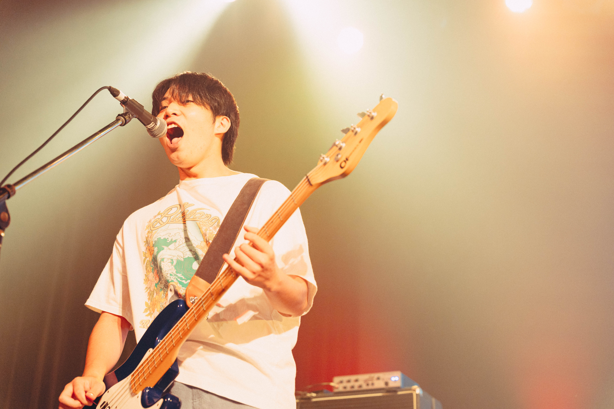
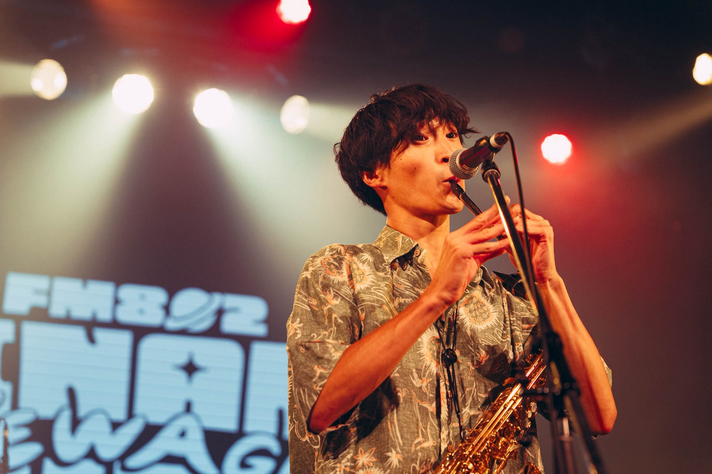

2026.09.01
巧偽拙誠
神戸KINGSX
OPEN 17:00 / START 17:30
詳細を見る →Ska × Punk × Celt

SkaPunCeltは大阪を中心に活動する 4人組アイリッシュスカパンクバンド。
Skaの軽快さ、Punkの勢い、Celtの民族的な音楽性を掛け合わせ、 思わず身体を動かしたくなる音楽を届ける。
SkaPunCelt HISTORYを見る →最新音源はこちら
Spotify Apple Music YouTubeライブ映像・MV

Guitar / Vocal
About のすけ →
Bass / Vocal
About ひろと →
Drums / Chorus
About セーラ →
Saxophone / Tin Whistle / Vocal
About しんや →OFFICIAL GOODS
SkaPunCeltのグッズは
ライブ会場の物販で販売しています。
FOLLOW US
SOCIAL
SkaPunCelt
Official SNS
ハリーダック
SkaPunCelt公式キャラクター